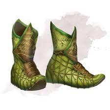
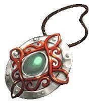
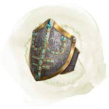

Como modificar Objetos
Magicos

La manera mas facil de inventar un nuevo objeto es alterar un ya existente. Si una paladin usa un mayal
como arma principal, podrias modificar una vengadora sagrada para que sea un mayal en lugar de una espada.
Puedes convertir un anillo de ariete en una varita, o una capa de proteccion en una diadema de proteccion,
sin alterar las propiedades del objeto. Otros reemplazos son igualmente faciles. Un objeto que ocasiona dano
de cierto tipo puede facilmente ocasionar dano de otro tipo. Por ejemplo, una espada lengua flamigera podria
ocasionar dano por electricidad en vez de fuego. Una aptitud puede reemplazar a otra, asi que una pocion de
escalar puede facilmente convertirse en una pocion de sigilo. Puedes tambien modificar un objeto fusionando
sus propiedades con las de otro objeto. Por ejemplo, podrias combinar los efectos de un yelmo de comprender
lenguajes con los de un yelmo de telepatia en un solo yelmo. Esto hace que el objeto sea mas poderoso (y
probablemente aumente su rareza), pero sin perjudicar tu juego.
Como crear un Objeto Nuevo
Si modificar un objeto no es suficiente, puedes crear uno desde cero. Un objeto magico deberia bien permitir
a un personaje hacer algo que el o ella no podian hacer antes, o bien mejorar la capacidad del personaje para
hacer algo que el o ella puede hacer de antemano. Por ejemplo, el anillo de salto permite a su portador saltar
distancias mas grandes, mejorando asi algo que un personaje puede hacer de antemano. Sin embargo, un anillo de
ariete le otorga a un personaje la capacidad de ocasionar dano por fuerza. Cuanto mas sencillo sea tu enfoque,
mas facil sera para un personaje utilizar el objeto dentro del juego. Otorgarle cargas al objeto esta bien,
especialmente si tiene multiples habilidades, pero decidir simplemente que un objeto esta siempre activado o
puede ser utilizado por dia un numero limitado de veces es mas facil de manejar.

Sintonización
Decide si el objeto requiere que un personaje este vinculado con el para utilizar sus propiedades. Usa estas
reglas de oro para decidir: si tener a todos los personajes del grupo haciendo circular un objeto para obtener
sus beneficios permanentes seria perturbador, el objeto deberia requerir vinculacion. Si el objeto otorga un
bonificador que otros objetos tambien conceden, es una buena idea requerir armonia de forma que los personajes
no intenten reunir demasiados de estos objetos.
